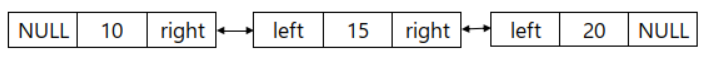

이중연결리스트(Double Linked List)
이중연결리스트란?
다음 노드만 가리키는 연결리스트에서 더하여 이전 노드까지 가리키는 자료구조.
이중연결리스트의 구조
이중 연결리스트는 리스트를 역순으로 출력 등 이전 노드를 참조해야 하는 상황이 생길 때 사용한다.
1 2 3 4 5 6 7 8 9 10 11 12 13 14 15 16 17 18 19 20 21 22 23 24 25 26 27 28 29 30 31 32 33 34 35 36 37 38 39 40 41 42 43 44 45 46 47 48 49 50 51 52 53 54 55 56 57 58 59 60 61 62 63 64 65 66 67 68 69 70 71 72 73 74 75 76 77 78 | #include<stdio.h> #include<stdlib.h> typedef struct node{ int data; struct node *left; struct node *right; }node; //리스트의 마지막에 노드를 추가하는 함수 void insertNode(node *h, int data){ node *newNode = (node*)malloc(sizeof(node)); newNode->data = data; node *temp = h; while(temp->right != NULL){ temp = temp->right; } newNode->left = temp; newNode->right = temp->right; temp->right = newNode; } //리스트의 마지막에 노드를 삭제하는 함수 void deleteNode(node *h){ if(h->right == NULL){ printf("list is empty!\n"); return; } node *temp = h->right; while(temp->right != NULL){ temp = temp->right; } //삭제할 노드를 정한 후 left를 이용하여 이전 노드 지정 node *pre = temp->left; pre->right = temp->right; free(temp); } void printList(node *h){ if(h->right == NULL){ printf("list is empty!\n"); return; } node *temp = h->right; printf("List = [ "); while(temp != NULL){ printf("%d ", temp->data); temp = temp->right; } printf("]"); } void main(){ node *h = (node*)malloc(sizeof(node)); h->left = NULL; h->right = NULL; insertNode(h, 10); insertNode(h, 15); insertNode(h, 20); insertNode(h, 25); deleteNode(h); printList(h); } | cs |